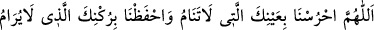
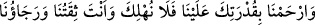
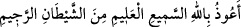

ağır geldiği için de o, gaiblik durumundan çıkarılarak “fe inneke/şüphesiz sen” buyrulup
müşâhede makamına getirilmiştir. Bununla da şu mânâ hâsıl edilmek istenmiştir: Biz
üzerindeki hükümlerimizin cereyânı husûsunda seni rahatsız edilmekten ve yanlış yola
gitmekten koruruz ve elde etmek istediğin şeye dosdoğru ulaştırırız. Biz seni muhabbet
ve aşk vasfı içinde tüm sıfat ve zât gözleri ile görür, bu gözlerle sana şevk ve muhâfaza
sebebiyle bakar ve koruruz ki bizim hâricimizdeki bazı olaylar seni değiştirmesin ve biz
bu gözlerle senden kahır yollarımızı ortadan kaldırabilelim. Zira sen bizim mahabbet
gözlerimizin mevziinde, lütuf kanatlarımızın altındasın.
“Â’yün” kelimesinin ne şekilde açıklandığına bir bak: Zira insan yüzünde gözden
daha şerefli başka bir organ yoktur. Her kim Allah’ın kalesine sığınırsa O’nun hıfzı
altında olur. Her kim de O’nun hıfzı altına girerse O’nun müşâhedesi dâhilindedir. Yine
her kim O’nun müşâhedesi altında bulunursa O’na müteveccih bir istikâmette O’na vâsıl
olur. O’na vâsıl olan mâsivâdan ayrılmış olur. Mâsivâdan ayrı olan O’nun indinde
Rabbânîlerin hayat tarzı ile yaşar.
Biri şöyle anlatmıştır: Biz İbrahim b. Edhem (k.s.) ile birarada bulunuyorken bazı
kimseler ona gelip: “Ey Ebû İshak! Bir arslan, yolumuzun üstünde dikilmiş duruyor”
dediklerinde İbrahim arslanın yanına gelip ona dedi ki: “Ey Ebu’l Hâris! Şâyet bizim
üzerimizde bir hakla emrolunduysan yapacağını yap, yoksa yolumuzdan çekil” İbrahim
bin Edhem bunu der demez arslan boğuk boğuk bağırarak arkasını dönüp uzaklaştı.[59]
Bunun üzerine İbrahim b. Edhem: “Sizden biriniz sabaha veya akşama girdiğinde
muhakkak:
“Ey Allah! Bizi uyumayan gözlerinle koru. Bizi râm olunamayan ulaşılamayan
rüknünle kudretinle muhâfaza et. Üzerimizde olan kudretinle bize rahmet et. Bizi helâk
etme. Sen bizim sarılıp güvendiğimiz en sağlam bağsın ve bizim en büyük ümidimizsin”
diye duâ etsin, demiştir.
el-Havvâs der ki: Ben Mekke’ye giderken gece vakti harabe bir yere girdim. Bir de
ne göreyim orada büyük bir canavar! Korktum ama bir sesin bana “Sakin ol! Çevrende
seni koruyan yetmiş bin melek var” diye seslendiğini duydum, demiştir. Fakir (Bursevî)
diyorum ki el-Havvâs’ı koruyan bu sesin onun bazı duâları sebebiyle gelen ses olması
ihtimâli vardır. Zira Havvâs sürekli bu duâlara devam ederdi. Rasûlullah (s.a.)’den
rivâyet
edildiğine
göre
o
şöyle
buyurmuştur:
“Her
kim
üç
defa;
der ve ardından Haşr sûresinin son üç âyetini
sabahleyin ve akşamleyin okursa Allah yetmiş bin meleği onu korumakla
görevlendirir.”[60]
el-Havvâs’a bu sesin gelmesinin sebebi, onun Allah’ın dostlarından olması
ihtimalindendir. Zira dost dostunu korur. Nitekim bir rivâyete göre her sabah Rasûlullah